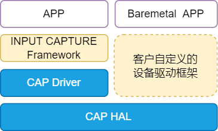

设计说明
15 Jan 2024
Read time: 4 minute(s)
源码说明
源代码位于 bsp/artinchip/：
-
bsp/artinchip/drv/cap/drv_cap.c，CAP Driver 层实现
-
bsp/artinchip/hal/pwmcs/hal_cap.c，PWMCS CAP 模块的 HAL 层实现
-
bsp/artinchip/include/hal/hal_cap.h，PWMCS CAP 模块的 HAL 层接口头文件
模块架构
CAP 驱动 Driver 层采用 RT-Thread 的 INPUT CAPTURE 设备驱动框架，如果只使用 HAL 层也可以支持 Baremetal 方式的应用场景。

关键流程设计
初始化流程
CAP 驱动的初始化接口通过 INIT_DEVICE_EXPORT(drv_cap_init) 完成，主要是通过调用 INPUT CAPTURE 子系统的接口 rt_device_inputcapture_register() 注册一个 CAP 设备。
CAP 控制器的配置过程，主要步骤有：
-
初始化 PWMCS 模块的 clk
-
使能 CAP 指定通道的 clk
-
设置 CAP 捕捉事件
-
使能 CAP 的中断
-
启动 CAP 计数
数据结构设计
struct aic_cap_data
属于 HAL 层接口，记录每一个 CAP
通道的捕捉数据信息：
struct aic_cap_data {
u8 id;
u32 freq;
float duty;
};
struct aic_cap
属于 Driver 层接口，记录一个 CAP
设备的配置信息：
struct aic_cap {
struct rt_inputcapture_device rtdev;
struct aic_cap_data *data;
};
Driver 层接口设计
以下接口是 INPUT CAPTURE
设备驱动框架的标准接口。
struct rt_inputcapture_ops
{
rt_err_t (*init)(struct rt_inputcapture_device *inputcapture);
rt_err_t (*open)(struct rt_inputcapture_device *inputcapture);
rt_err_t (*close)(struct rt_inputcapture_device *inputcapture);
rt_err_t (*get_pulsewidth)(struct rt_inputcapture_device *inputcapture, rt_uint32_t *pulsewidth_us);
};| 函数原型 | static rt_err_t aic_cap_init(struct rt_inputcapture_device *capture) |
|---|---|
| 功能说明 | 初始化配置一路 CAP |
| 参数定义 |
capture - 指向 rt_inputcapture_device 设备的指针
|
| 返回值 | 0，成功；<0，失败 |
| 注意事项 | - |
| 函数原型 | static rt_err_t aic_cap_open(struct rt_inputcapture_device *capture) |
|---|---|
| 功能说明 | 打开 CAP |
| 参数定义 |
capture - 指向 rt_inputcapture_device 设备的指针
|
| 返回值 | 0，成功；<0，失败 |
| 注意事项 | - |
| 函数原型 | static rt_err_t aic_cap_close(struct rt_inputcapture_device *capture) |
|---|---|
| 功能说明 | 关闭 CAP |
| 参数定义 |
capture - 指向 rt_inputcapture_device 设备的指针
|
| 返回值 | 0，成功；<0，失败 |
| 注意事项 | - |
| 函数原型 | static rt_err_t aic_cap_get_pulsewidth(struct rt_inputcapture_device *capture, rt_uint32_t *pulsewidth_us) |
|---|---|
| 功能说明 | 计算占空比与周期值 |
| 参数定义 |
capture - 指向 rt_inputcapture_device 设备的指针
pulsewidth_us - RT-Thread 回调参数脉冲间隔变量的指针
|
| 返回值 | 0，成功；<0，失败 |
| 注意事项 | AIC 除了提供标准回调参数 pulsewidth_us 外，另外提供了回调参数：频率与占空比 |
HAL 层接口设计
HAL 层的函数接口声明存放在 hal_cap.h
中，主要接口有：
void hal_cap_ch_init(u32 ch); void hal_cap_ch_deinit(u32 ch); void hal_cap_int_enable(u32 ch, int enable); u32 hal_cap_int_sta(void); u32 hal_cap_is_pending(u32 ch); int hal_cap_set_freq(u32 ch, u32 freq); int hal_cap_set_cnt(u32 ch, u32 cnt); int hal_cap_get(u32 ch); int hal_cap_in_config(u32 ch); u32 hal_cap_reg0(u32 ch); u32 hal_cap_reg1(u32 ch); u32 hal_cap_reg2(u32 ch); u32 hal_cap_int_flg(u32 ch); void hal_cap_clr_flg(u32 ch, u32 stat); int hal_cap_enable(u32 ch); int hal_cap_disable(u32 ch); void hal_cap_cnt_start(u32 ch); void hal_cap_cnt_stop(u32 ch); int hal_cap_init(void); int hal_cap_deinit(void); void hal_cap_status_show(void);
Demo
本 Demo 是 test_cap
的部分源码（bsp/examples/test-cap/test_cap.c）：
#define WATER_MARK 50 struct aic_cap_usr { rt_uint8_t id; rt_uint32_t freq; float duty; }; /* callback function */ static rt_err_t cap_cb(rt_device_t dev, rt_size_t size) { struct rt_inputcapture_data inputcap_data[WATER_MARK]; rt_device_read(dev, 0, (void *)inputcap_data, size); #ifdef ULOG_USING_ISR_LOG struct aic_cap_usr *data = (struct aic_cap_usr *)dev->user_data; rt_kprintf("cap%d: freq:%dHz, duty:%d.%02d%%\n", data->id, data->freq, (rt_uint32_t)data->duty, (rt_uint32_t)(data->duty * 100) % 100); for (int i = 0; i < size; i++) rt_kprintf("%s: pulsewidth:%d us\n", &dev->parent.name, inputcap_data[i].pulsewidth_us); #endif return RT_EOK; } int test_cap(int argc, char **argv) { rt_uint32_t watermark = WATER_MARK; rt_device_t cap_dev = RT_NULL; char device_name[8] = {"cap"}; int ret; if (argc != 2) { rt_kprintf("Usage: test_cap <channel>\n"); return -RT_ERROR; } strcat(device_name, argv[1]); cap_dev = rt_device_find(device_name); if (cap_dev == RT_NULL) { rt_kprintf("Can't find %s device!\n", device_name); return -RT_ERROR; } /* set callback function */ rt_device_set_rx_indicate(cap_dev, cap_cb); ret = rt_device_control(cap_dev, INPUTCAPTURE_CMD_SET_WATERMARK, &watermark); if (ret != RT_EOK) { rt_kprintf("Failed to set %s device watermark!\n", device_name); return ret; } ret = rt_device_open(cap_dev, RT_DEVICE_OFLAG_RDWR); if (ret != RT_EOK) { rt_kprintf("Failed to open %s device!\n", device_name); return ret; } rt_kprintf("cap%d open.\n", atoi(argv[1])); return RT_EOK; } MSH_CMD_EXPORT_ALIAS(test_cap, test_cap, Test the cap);